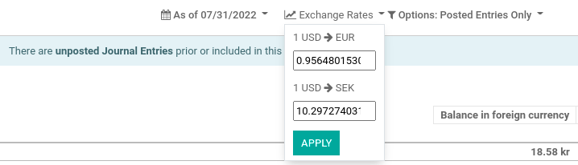

Manage a bank account in a foreign currency¶
In Odoo, every transaction is recorded in the default currency of the company, and reports are all based on that default currency. When you have a bank account in a foreign currency, for every transaction, Odoo stores two values:
The debit/credit in the currency of the company;
The debit/credit in the currency of the bank account.
Currency rates are updated automatically using the web services of a banking institution. By default, Odoo uses the European Central Bank’s web services but other options are available.
Configuration¶
Activate multi-currencies¶
To work with multiple currencies, go to and tick Multi-Currencies. Under Post Exchange difference entries in:, provide a Journal, a Gain Account, a Loss Account, and then click on Save.
Configure currencies¶
Once Odoo is configured to support multiple currencies, they are all created by default, but not necessarily active. To activate the new currencies, click on Activate Other Currencies under the Multi-Currencies setting or go to .
When the currencies are activated, you can choose to automate the currency rate update, or leave it on manual. To configure the rate update, go back to , check Automatic Currency Rates, set Interval to your desired frequency, and then click on Save. You also have the option to choose the Service you wish to obtain currency rates from.
Click on the Update now button (🗘) besides the Next Run field to update the currency rates manually.
Create a new bank account¶
In the accounting application, go to and
create a new one. Enter a Journal Name and set the Type to Bank. In the
Journal Entries tab, enter a short code, a currency, and then finally click on
the Bank Account field to create a new account. In the pop-up window of the account
creation, enter a name, a code (ex.: 550007), set its type to Bank and Cash, set a currency type,
and save. When you are back on the journal, click on the Account Number field, and
in the pop-up window, fill out the Account Number, Bank of your account, and
save.
Upon creation of the journal, Odoo automatically links the bank account to the journal. It can be found under .
Vendor bill in a foreign currency¶
To pay a bill in a foreign currency, simply select the currency next to the Journal field and register the payment. Odoo automatically creates and posts the foreign exchange gain or loss as a new journal entry.

Note
Note that you can pay a foreign bill with another currency. In that case, Odoo automatically converts between the two currencies.
Unrealized Currency Gains/Losses Report¶
This report gives an overview of all unrealized amounts in a foreign currency on your balance sheet, and allows you to adjust an entry or manually set an exchange rate. To access this report, go to . From here, you have access to all open entries in your balance sheet.

If you wish to use a different currency rate than the one set in , click the Exchange Rates button and change the rate of the foreign currencies in the report.
When manually changing exchange rates, a yellow banner appears allowing you to reset back to Odoo’s rate. To do so, simply click on Reset to Odoo’s Rate.

In order to update your balance sheet with the amount of the adjustment column, click on the Adjustment Entry button. In the pop-up window, select a Journal, Expense Account and Income Account to calculate and process the unrealized gains and losses.
You can set the date of the report in the Date field. Odoo automatically reverses the booking entry to the date set in Reversal Date.
Once posted, the adjustment column should indicate 0.00, meaning all unrealized
gains/losses have been adjusted.